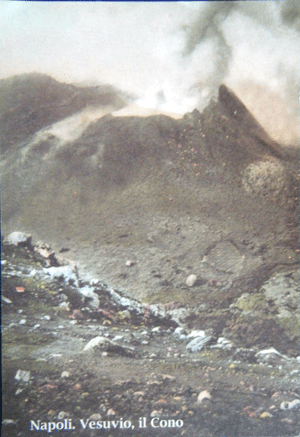

Weekend in Naples
It had been nine years or so since I spent a night in Naples. During that year I passed through lots of cities, seeing and accumulating pieces of each but never a whole. Naples, then, was one among many. I understood that it was chaotic, that the pizzas were good but that’s about all. This past weekend I returned for a closer look.

Vesuvius lumbers, daunting, its sloped sides slide to suburban then sea. Naples the bay rocks like a mirrored egg between the jutting arms of land. We watched a cruise ship depart at sunset, the volcano bruised purple, the ship an ugly skyscraper laid horizontal; nature clashes with industry, nature and the urban city. Narrow streets, the historic center, chubby pizza stuffed men and women stuffed into sweat suits or short shorts and heels, their bellies runneth over. Cool shadow engulfed streets, a few hot piazze, earthen stone, graffiti. Families buzz past on motorini without helmets. If Rome functions according to a semi-anarchy then Naples is anarchy head on.
With no Roman Empire to lend the visions of grandeur that have shaped Rome’s slaps of beauty, Naples is an ancient piece of kid’s putty formed according to living: life in the streets. Business as usual. Washed laundry on lines draped across vendors and kids kicking balls, boys of all ages. From the hill the lack of green space was heart breakingly apparent. At night, after wine, the centro storico unbound towering doorways dressed with a grate, the vestibule or courtyard or an entrance-atrium of stone steps or archways over stairs raising through the open. Peering with my nose against the grate, I thought of ghost stories and resounding footsteps; I wondered what it would be like to live surrounded by so much pavement. At night in Piazza Bellini people smoke pot like they once did in Campo de’Fiori before the floodlights.
Raw is life without the polished veneer of Society. Bella figura is dead down there. It’s brilliant, the slanting sun down the street, the way the women’s spangled shirts shimmer, how red traffic lights mean little. I spent much of the weekend walking around in a stupor of stimulation overload, resurfacing at dinner to eat a pizza.
· · · · · · · · · · · · · · · · · · · ·